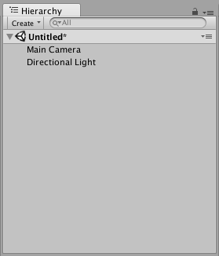
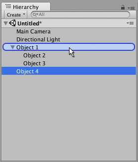
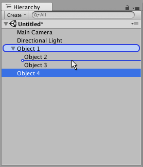

The Hierarchy window

The Hierarchy window contains a list of every GameObject (referred to in this guide as an "object") in the current Scene. Some of these are direct instances of Asset files (like 3D models), and others are instances of Prefabs, which are custom objects that make up most of your game. As objects are added and removed in the Scene, they will appear and disappear from the Hierarchy as well.
By default, objects are listed in the Hierarchy window in the order they are made. You can re-order the objects by dragging them up or down, or by making them "child" or "parent" objects (see below).
Parenting
Unity uses a concept called Parenting. When you create a group of objects, the topmost object or Scene is called the "parent object", and all objects grouped underneath it are called "child objects" or "children". You can also created nested parent-child objects (called "descendants" of the top-level parent object).

Click a parent object's drop-down arrow (on the left-hand side of its name) to show or hide its children. Hold down the Alt key while clicking the drop-down arrow to toggle visibility of all descendant objects of the parent, in addition to the immediate child object.
Making a child object
To make any object the "child" of another, drag and drop the intended child object onto the intended parent object in the Hierarchy.

You can also drag-and-drop an object alongside other objects to make them "siblings" - that is, child objects under the same parent object. Drag the object above or below an existing object until a horizontal blue line appears, and drop it there to place it alongside the existing object.

Child objects inherit the movement and rotation of the parent object. To learn more about this, see documentation on the Transform component.
Alphanumeric sorting
The order of objects in the Hierarchy window can be changed to alphanumeric order. In the menu bar, select Edit > Preferences in Windows or Unity > Preferences in OS X to launch the Preferences window. Check Enable Alpha Numeric Sorting.
When you check this, an icon appears in the top-right of the Hierarchy window, allowing you to toggle between Transform sorting (the default value) or Alphabetic sorting.
Multi-Scene editing
It is possible to have more than one Scene open in the Hierarchy window at the same time. To find out more about this, see the Multi Scene Editing page.